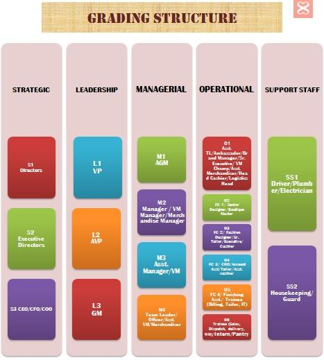

<!--
  Generated template for the OrgChartPage page.

  See http://ionicframework.com/docs/components/#navigation for more info on
  Ionic pages and navigation.
-->
<ion-header>
  <ion-navbar>
    <button ion-button menuToggle>
      <ion-icon name="menu"></ion-icon>
    </button>
    <ion-title>Organisation Chart</ion-title>
  </ion-navbar>
</ion-header>

<ion-content padding>
  
</ion-content>
